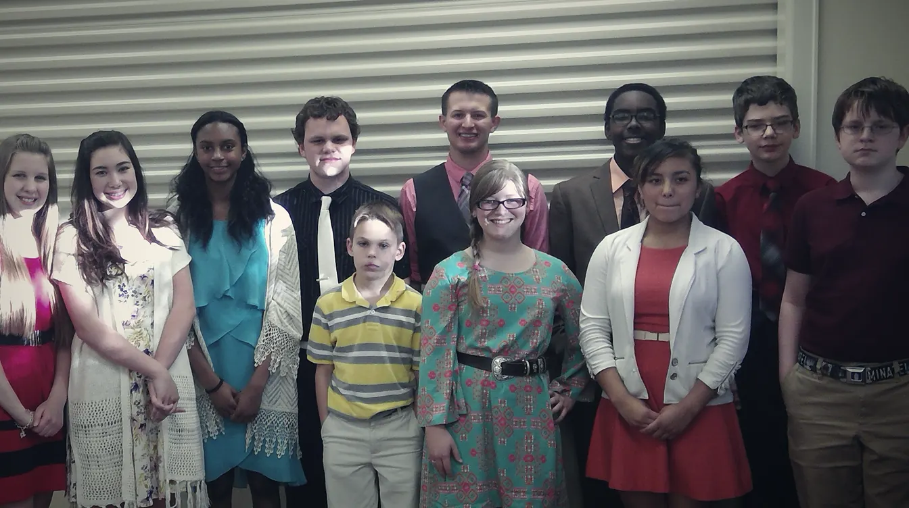
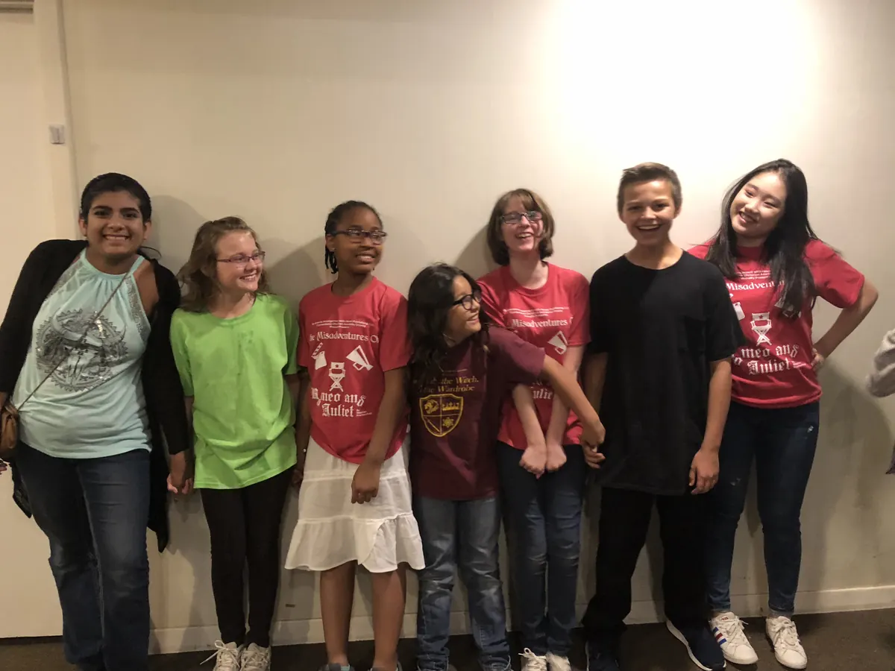
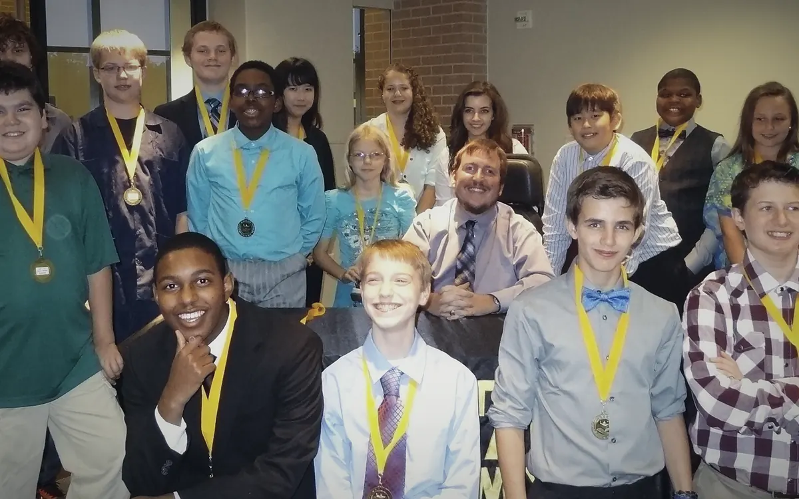

Rooted in Christ.
Built with families.
A Christ-centered, Biblically based K–12 school in Bryan, Texas — since 2002.
Every child known by name.
Brazos Valley Cornerstone Christian Academy is a Christ-centered, Biblically based K–12 private school. We meet in the Cavitt Church of Christ building in Bryan, and we partner with families so that every student will grow in wisdom and stature, and in favor with God and man.

Every grade
Kindergarten through Grade 12, with extended care.
Since 2002
Opened August 18, 2002.
Black and gold
Our mascot and school colors.
Cavitt Avenue
Bryan, Texas 77801 — in the Cavitt Church of Christ building.
“And Jesus increased in wisdom and in stature
and in favor with God and man.”Luke 2:52 · ESV
It started with forty believers and one question.
In July 2001, Christians across Bryan–College Station gathered to imagine a school that would surround children with the love of God — and equip them to become whatever God intends.
Doors open
August 18 — eleven kindergarten and pre-K students.
In reading
By 2005, our kindergartners ranked among the nation’s best in total reading.
Fully accredited
The smallest school ever accredited by the Southern Association.
Science Academy
The first and only Science Academy in Brazos County.
First graduates
A grade added every year — until our first senior class walked.
State champions
The Lady Cougars win back-to-back TCAL Class 2A titles.
Cornerstone graduates go on to Texas A&M, Harding University, Blinn College and beyond — prepared to go boldly into the world with purpose and love.
Small school. Proven standards.
Cornerstone is accredited by Cognia (AdvancED), formerly SACS — and was the smallest school ever accredited by SACS.

Accredited
Cognia / AdvancED, formerly the Southern Association of Colleges and Schools (SACS).
Stanford Achievement Test
Nationally on the Stanford Achievement Test
Honor societies
National Honor Society and National Junior Honor Society.
Parent Association of Cornerstone Kids.
PACK raises funds and organizes activities through the year that help our teachers and students reach their goals. Please send at least one family member to PACK meetings.
Governed with care.
An appointed Board of Directors sets the school’s policies and governs it under the corporation’s bylaws.
Trey Marchbanks
President
Clay Bassham
Vice-President
Joe Hays
Board member
Meriden Warden
Board member
Marcia Crouch
Board member
Teach with us.
Interested in teaching or substitute teaching at Cornerstone? Contact the school office for a current application.